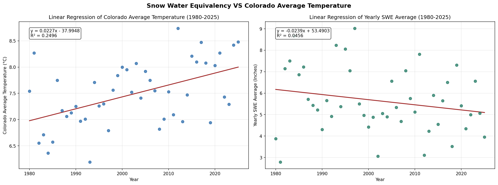
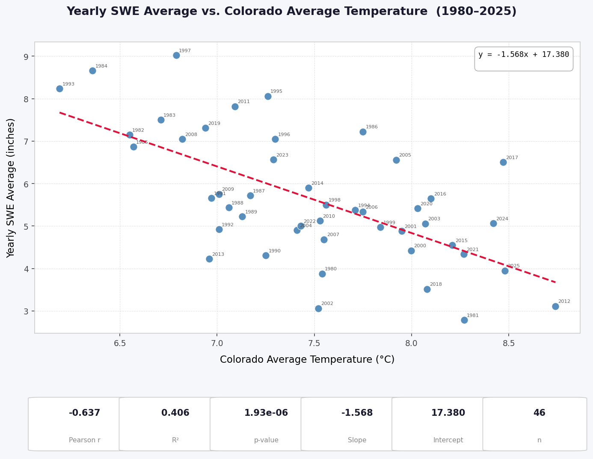
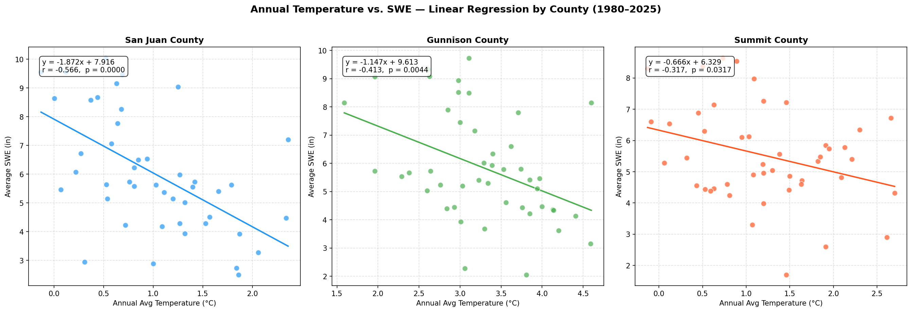
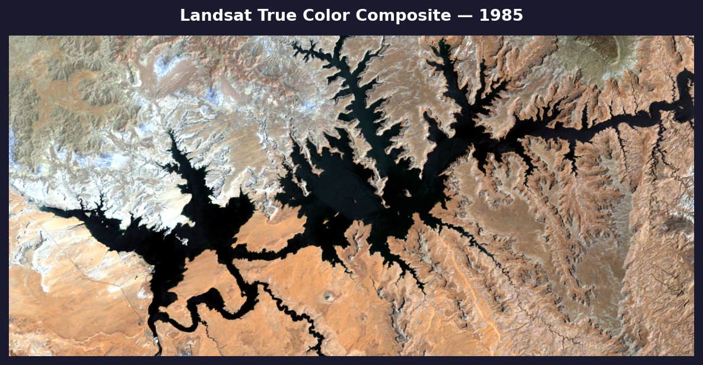
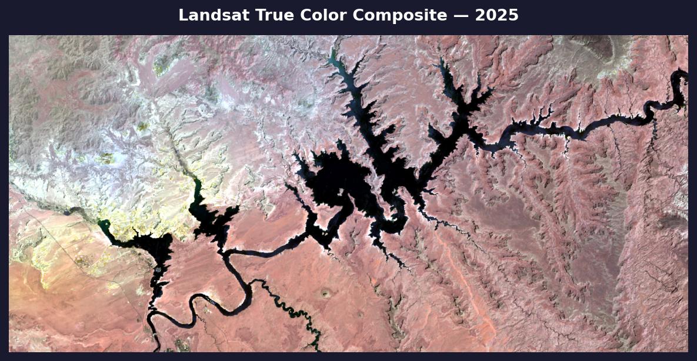
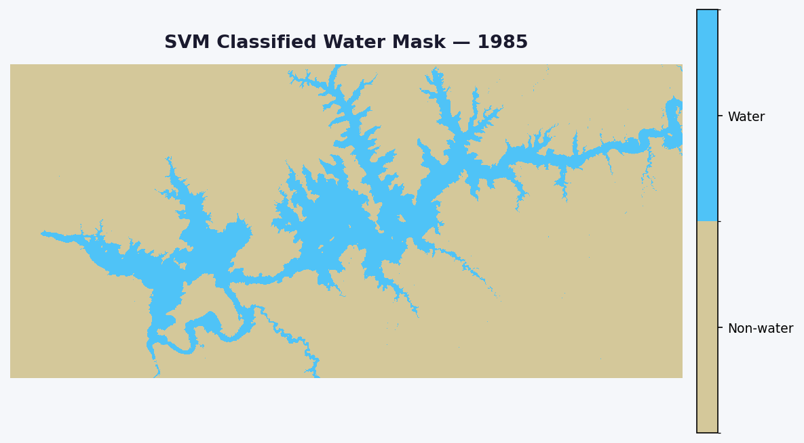
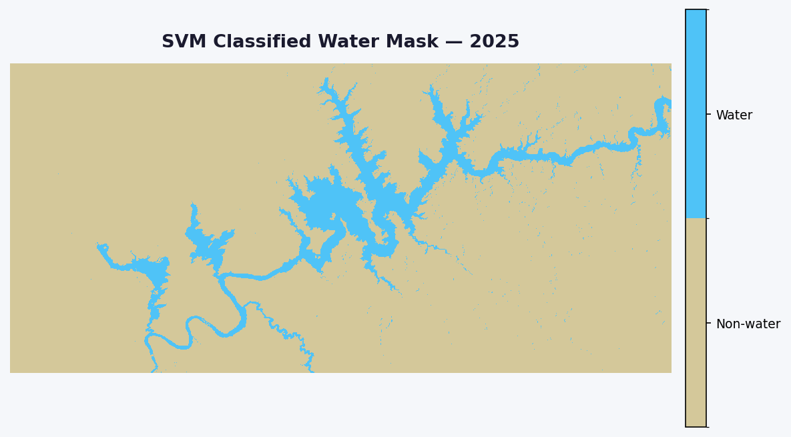
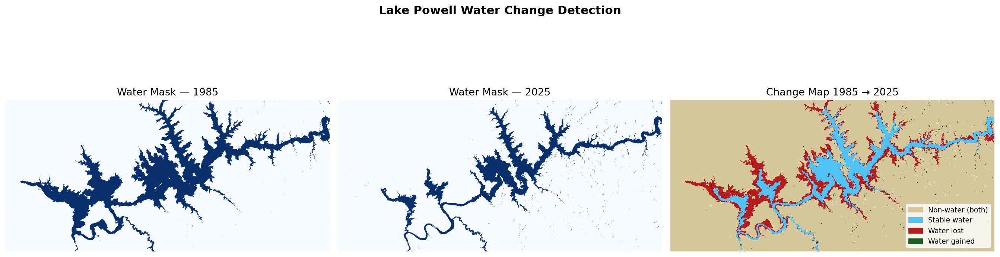

Snow Water Equivalence, Temperature Dynamics & SVM-Based Change Detection in Colorado
A longitudinal analysis of annual SWE trends across San Juan, Gunnison, and Summit counties from 1980 to 2025, integrating PRISM climate data, SNOTEL station records, Google Earth Engine imagery, and SVM-based Landsat classification.
This study investigates the relationship between annual average temperature and snow water equivalent across three high-elevation Colorado counties and at the statewide scale. Using spatially-averaged SNOTEL station data and PRISM-derived temperature rasters, we quantify the strength of temperature–SWE correlations and model long-term trends through linear regression. Landsat imagery extracted via Google Earth Engine extends the analysis to land cover change detection at Lake Powell between 1985 and 2025 using a support vector machine (SVM) classifier.
46
Years of data 1980 – 2025
88
SNOTEL stations across Colorado
4
Spatial scales 3 counties + statewide
30m
Landsat resolution GEE export
Statewide analysis
Colorado — all stations
Statewide temperature & SWE linear regression
OLS linear regression was applied independently to Colorado average annual temperature and statewide SWE average across all 88 SNOTEL stations from 1980–2025. Both variables were modeled over year using scipy.stats.linregress and visualized as a dual-panel interactive Plotly chart.
Colorado Average Temperature
y = 0.0227x − 37.9948
Slope (m)+0.0227 °C / year
Intercept (b)−37.9948
R²0.2496 (25.0%)
Pearson R+0.4996
P-value4.08 × 10⁻⁴ ✓ significant
Std. Error0.0059
Sample size (n)46
Total gain (46 yrs)+1.04 °C
Yearly SWE Average
y = −0.0239x + 53.4903
Slope (m)−0.0239 in / year
Intercept (b)+53.4903
R²0.0456 (4.6%)
Pearson R−0.2136
P-value0.154 ✗ not significant
Std. Error0.0165
Sample size (n)46
Total loss (46 yrs)−1.10 inches
Temperature trend — statistically significant
Colorado average temperature has risen approximately +1.04°C over the 46-year study period at a rate of +0.023°C per year. This trend is statistically significant (p < 0.001) and the model explains 25% of annual temperature variance — a robust warming signal.
SWE trend — not statistically significant (p = 0.154)
While the regression shows a statewide SWE decline of approximately −1.10 inches over 46 years, this trend does not clear the significance threshold. High interannual variability driven by ENSO (El Niño–Southern Oscillation) cycles — which produce large year-to-year swings in Colorado snowpack — introduces substantial noise that the linear model cannot resolve, suppressing the R² to just 4.6%. County-level correlations (e.g., San Juan r = −0.566) are stronger, likely because local topographic controls partially dampen ENSO-driven variance.
Regression plots
Dual-panel OLS regression chart for Colorado average temperature and statewide SWE average, 1980–2025. Hover over points for year-by-year values.

Statewide analysis
Colorado — all stations
Statewide temperature & SWE correlation
A statewide Pearson correlation analysis was conducted using Colorado average annual temperature data merged with a statewide yearly SWE average derived from all 88 SNOTEL stations. OLS linear regression was fitted over the full 1980–2025 period. Results indicate a moderate-strong negative relationship: as average annual temperature increases, statewide snowpack declines significantly.
r = −0.637
Statewide Pearson correlation coefficient · co_avg_temp vs. swe_average, 1980–2025 · p < 0.001
−0.637
Pearson r Statewide
0.406
R² Variance explained
1.93×10⁻⁶
p-value Two-tailed
−1.568
Slope inches / °C
46
n Years
Regression interpretation
Regression equation
y = −1.568x + 17.380
For each 1°C rise in Colorado average annual temperature, statewide SWE declines by approximately 1.57 inches on average.
Significance
p = 1.93 × 10⁻⁶
Highly statistically significant at α = 0.05. The probability of observing this relationship by chance is less than 0.0002%.
Variance explained
R² = 0.406
Temperature explains approximately 41% of year-to-year SWE variability. Remaining variance reflects precipitation timing, storm patterns, and elevation effects.
Statewide regression plot
Scatter plot of statewide yearly SWE average against Colorado average temperature (1980–2025). Each point is labeled with its year; the dashed crimson line shows the OLS fit.

County-level findings
Correlation results — by county
Temperature & SWE — county analysis
All three counties exhibit a statistically significant negative correlation between annual average temperature and snow water equivalent, consistent with expectations for high-elevation snowpack dynamics.
San Juan County
r = −0.566
Moderate-strong negative correlation. Strongest temperature–SWE relationship of the three counties studied.
p < 0.001 · n = 46
Gunnison County
r = −0.413
Moderate negative correlation. Statistically significant relationship between warming trends and snowpack decline.
p = 0.004 · n = 46
Summit County
r = −0.317
Weak-moderate negative correlation. Significant at the 95% confidence level.
p = 0.032 · n = 46
Linear regression plots — county level
Scatter plots with fitted OLS regression lines for each county. Points are labeled by year; the dashed line shows the temperature–SWE trend.

Google Earth Engine
Image extraction
Landsat image acquisition via GEE
Landsat surface reflectance imagery for the Lake Powell region was acquired using the Google Earth Engine Python API. Two scenes were exported — Landsat 5 TM for June 1985 and Landsat 9 OLI/TIRS for June 2025 — clipped to the defined region of interest and exported as GeoTIFFs to Google Drive for downstream SVM classification.
1985 scene
Landsat 5 TM — June 14, 1985
Collection: LANDSAT/LT05/C02/T1_L2. Bands: SR_B1–B5, SR_B7. Mosaicked and clipped to ROI.
2025 scene
Landsat 9 OLI — June 4, 2025
Collection: LANDSAT/LC09/C02/T1_L2. Bands: SR_B1–B7. Mosaicked and clipped to ROI.
Region of interest
Lake Powell, Utah/Arizona
ROI: −111.64° to −110.94° W, 36.92° to 37.19° N. Exported at 30m resolution.
Export format
GeoTIFF to Google Drive
Both tasks completed successfully. Export used ee.batch.Export.image.toDrive with maxPixels=1e13.
True color composites — Lake Powell
Raw Landsat imagery rendered as true color composites (Red–Green–Blue) for the Lake Powell region of interest. These scenes serve as the visual basis for SVM classification and illustrate the dramatic change in surface water extent between the two acquisition dates.
1985 — Landsat 5 TM · June 14

2025 — Landsat 9 OLI · June 4

Classified imagery — Lake Powell
SVM-classified binary water masks for 1985 and 2025. The reduction in water extent over 40 years is visually apparent between the two scenes.
1985 — Classified water mask

2025 — Classified water mask

Machine learning
SVM classification
Land cover classification — Landsat imagery
A support vector machine (SVM) with an RBF kernel was trained on region-of-interest (ROI) samples drawn from the GEE-exported Landsat scenes for both 1985 and 2025. Six spectral bands were used as features, normalized per band using z-score standardization. Training samples were balanced to 5,000 pixels per class. The model was evaluated on a stratified 80/20 hold-out test set (n = 4,000 pixels).
Per-class metrics from the held-out test set. Both classes achieve near-perfect scores across all metrics.
Class
Precision
Recall
F1-score
Support
0 — Non-water
1.00
1.00
1.00
2,000
1 — Water
1.00
1.00
1.00
2,000
Macro avg
1.00
1.00
1.00
4,000
Weighted avg
1.00
1.00
1.00
4,000
Classification pipeline
Step 01
GEE image extraction
Landsat 5 (1985) and Landsat 9 (2025) scenes exported from Google Earth Engine as 30m GeoTIFFs to Google Drive.
Step 02
Image normalization
Scenes loaded via rasterio. Per-band z-score normalization applied globally across each image.
Step 03
ROI sampling
Training pixels extracted from shapefile ROIs. Up to 20,000 pixels per ROI, balanced to 5,000 per class.
Step 04
SVM training
SVC with RBF kernel, C=10, gamma='scale', class_weight='balanced'. Trained on pooled 1985 + 2025 samples.
Step 05
Tile-based prediction
Full rasters classified in 256×256 pixel tiles. Output saved as single-band uint8 GeoTIFF.
Step 06
Accuracy assessment
OA, AA, Cohen's kappa, confusion matrix, and per-class F1 reported on the held-out test set.
Change detection
Lake Powell
Water body change — 1985 to 2025
Binary water masks were derived from the SVM classifications for each year. Pixel-level comparison between the 1985 and 2025 classified rasters quantifies water area gained, lost, and stable over the 40-year period.
285.55 km²
Water area in 1985
154.89 km²
Water area in 2025
135.21 km²
Water lost (1985 → 2025)
4.55 km²
Water gained (new water)
150.34 km²
Stable water (both years)
−45.76%
Net % change from 1985
Net change: −130.66 km² — representing a loss of nearly half of Lake Powell's 1985 surface water extent over 40 years.
Change map
Four-class change map: non-water in both years, stable water, water lost, and water gained.

Non-water (both years)
Stable water
Water lost
Water gained
Methodology
Data & methods
Methods overview
1SWE data — Annual SWE averages computed from NRCS SNOTEL stations within each county boundary. Station values averaged to produce county-level and statewide SWE estimates per year.
2Temperature data — Annual average temperatures derived from PRISM 4km gridded rasters (county level) and a statewide Colorado average temperature dataset (co_m_temp_1980_2025.csv), clipped to boundaries in GIS.
3Statistical analysis — Pearson correlation coefficients computed at both county and statewide scales. OLS linear regression fitted using scipy.stats.linregress. Statewide: r = −0.637, R² = 0.406, p = 1.93×10⁻⁶, slope = −1.568 in/°C, intercept = 17.380 in, n = 46.
4GEE image extraction — Landsat 5 TM (June 14, 1985) and Landsat 9 OLI (June 4, 2025) surface reflectance scenes acquired via Google Earth Engine Python API. Exported as 30m GeoTIFFs to Google Drive.
5SVM classification — Support vector machine with RBF kernel (C=10, gamma='scale') trained on balanced ROI samples. Z-score normalized spectral features across 6 bands. Tile-based prediction applied to full scenes.
6Change detection — Binary water masks derived from SVM outputs compared pixel-by-pixel. Water area change quantified in km² accounting for raster CRS and pixel resolution.
7Significance testing — Two-tailed p-values reported for all correlations. Significance threshold set at α = 0.05. SVM accuracy reported via OA, AA, Cohen's kappa, and per-class F1 scores.
Research team
Authors
Contributors
AM
Andong Ma
Faculty Mentor
KM
Kevin Morales
GIS & Data Analyst
Replicate this study
All code, data processing scripts, and classification notebooks used in this study are openly available on GitHub. Anyone can clone the repository to reproduce the SWE–temperature regression analysis, the GEE image extraction, and the SVM land cover classification.